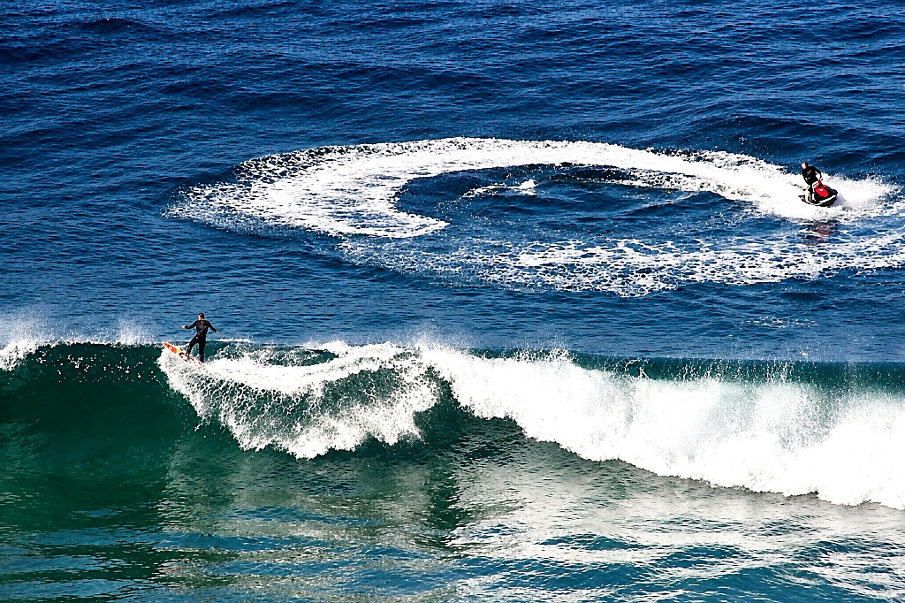

Rio de JaneiroBARRA DA TIJUCA — RIO DE JANEIRO
Viva a experiência do surf rebocado na capital carioca. A orla aberta da Barra oferece espaço ideal para manobras náuticas e sessões dinâmicas com suporte direto da nossa equipe, agendadas conforme as melhores condições do mar.
- Praticidade e acesso facilitado na capital do Rio
- Espaço aberto para condução do jet ski e primeiras puxadas
- Sessões programadas conforme o monitoramento de ondulação e maré